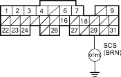

- Check for continuity between ECM/PCM connector terminal E29 and body ground.
ECM/PCM CONNECTOR E (31P)

Wire side of female terminals
Is there continuity?
YES - Repair short in the wire between the service check connector and the ECM/PCM (E29). 
NO - Substitute a known-good ECM/PCM and recheck, refer to the '01 Civic Shop Manual on this CD (see page 11-6). If symptom/indication goes away, replace the original ECM/PCM.
- Turn the ignition switch OFF.
- Disconnect ECM/PCM connector E (31P).
- Turn the ignition switch ON (II).
Is the MIL on?
YES - Repair short in the wire between the gauge assembly and the ECM/PCM (E31). If the wires are OK, replace the gauge assembly.
NO - Substitute a known-good ECM/PCM and recheck, refer to the '01 Civic Shop Manual on this CD (see page 11-6). If symptom/indication goes away, replace the original ECM/PCM.